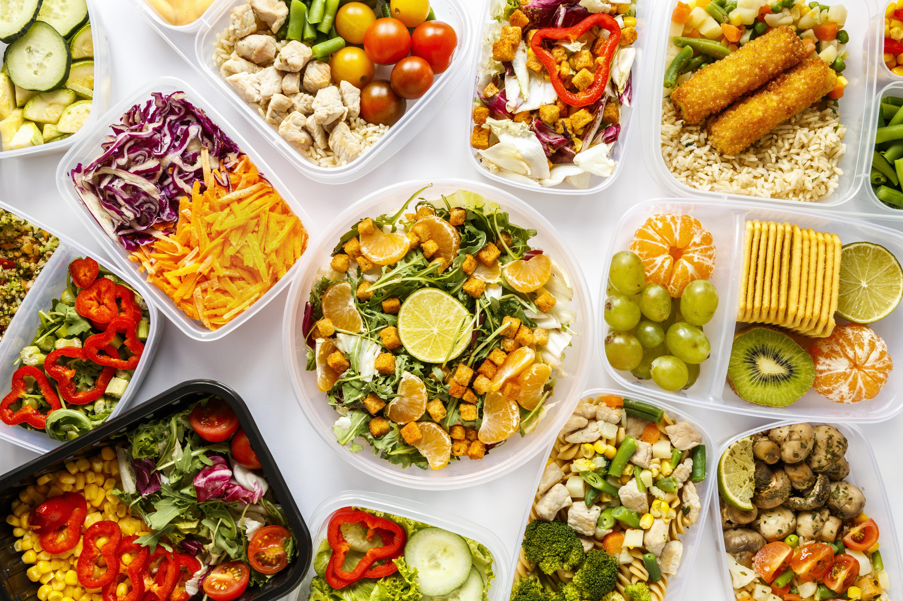

Temps Total
15min
etape 1
I'm baby mustache man braid fingerstache small batch venmo succulents shoreditch.

etape 2
Pabst pitchfork you probably haven't heard of them, asymmetrical seitan tousled succulents wolf banh mi man bun bespoke selfies freegan ethical hexagon.
etape 3
Polaroid iPhone bitters chambray. Cornhole swag kombucha live-edge.
1 1/2 cups dry pancake mix
1/2 cup flax seed meal
1 cup skim milk
Hand Blender
Large Heavy Pot With Lid
Measuring Spoons
Measuring Cups